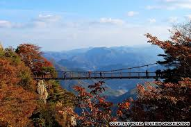

| Ggotji Beach | Soule city center | Petite France |
|---|---|---|
 |
 |
|
| For some people, the two rocks are just like a couple. That is why many couples are visiting the beach because the interesting legend and the rocks.Plan to stay:3hours | The fun seems to be never ending in Seoul so be ready to experience and explore what is best and outstanding.Plan to stay:1hour | It is a small french cultural village set in a Korean countryside that has museums, restaurants, cafes, workshops and a guesthouse.We can go there at 2pm.Plan to stay:1hour |
| Kyeong-Wha Station, Jinhae | Gyeongju | Lotte Mart |
|---|---|---|
|  | ||
| Here the spectacular beauty of gardens, blossoming flowers, gorgeous trees and beauty of spring festivals will make you enjoy quality time.Plan to stay:3hours | This is a famous coastal city of Korea, and tracks its history back from Emille Bell Cast times. Gyeongju is also a UNESCO World Heritage recognized city, so you can be assured to have a lot of fun here.Plan to stay:1hour | At Lotte Mart, you can buy high-quality goods - groceries, processed food, household goods, clothes and fashion accessories, electronics, toys, cosmetics, and more - at the lowest prices with remarkable service.Plan to stay:3hours |
| Darangee Village | Gongryong Ridge, Seorak Mountain | Upo Marsh |
|---|---|---|
| Their distinctive cultures and traditions make them the prior attraction for the tourists. The climate of this village is usually moderate, but sometimes it gets cold so be prepared and bring hot clothes.Plan to stay:2hours | Biking and riding onto Gongryong Ridge, Seorak Mountain is strictly forbid for the tourists. But if you feel that you are much expert to dominate the rocky area and peaks, then go ahead.Plan to stay:1hour | Upo Marsh is one of the largest and most prominent wetlands of Korea, with 2400 kilometer squared landscape. This city has some of the thrilling and ancient plant and animal preservatives.Plan to stay:3hours |
| The Demiliterized Zone (DMZ) | Jeju Island | Bukchon Hanok Village |
|---|---|---|
| This buffer zone is situated in between the Northern and Southern Korea. DMZ is an ancient city, tracking its history back from 1953. The remarkable natural beauty of this land in addition to the military services make the tourists get attracted.Plan to stay:2hours | Jeju Island is a semi-tropical southern island of Korea. This is, no doubt, a paradise on earth. The crystal-clear water of the beaches, oceans and river enhance the beauty and appeal of the island to much extent.Plan to stay:3hours | Now it is used as a traditional culture center and hanok restaurant, allowing visitors to experience the atmosphere of the Joseon Dynasty.We can go there at 3pm.Plan to stay: 5hours |
| Price List | |
|---|---|
| Numbers of people | Usual Price |
| Single | $3000 |
| Dual | $6000 |
| Triple | $9000 |
| Four and above | $2800 for each |